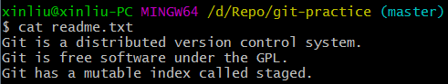
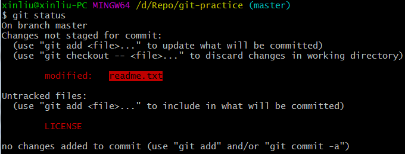
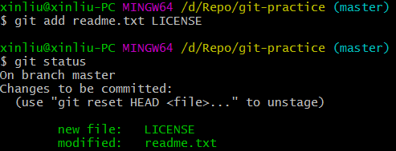
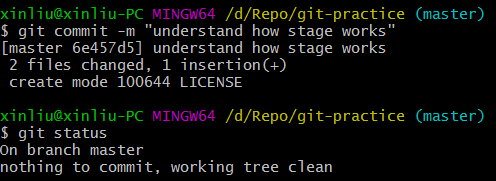

git 和 svn 的一个不同之处就是有暂存区的概念。
工作区和暂存区
工作区（Working Directory）
就是在电脑里能看到的目录，比如下图中git-practice文件夹就是一个工作区。

版本库（Repository）
工作区有一个隐藏目录.git，这个不算工作区，而是 git 的版本库。
git 的版本库里存了很多东西，其中最重要的就是称为 stage（或者叫 index）的暂存区，还有 git 为我们自动创建的第一个分支master，以及指向master的一个指针叫HEAD。

我们把文件往 git 版本库里添加的时候，是分两步执行的：
① git add把文件添加进去，实际上就是把文件修改添加到暂存区；
② git commit提交更改，实际上就是把暂存区的所有内容提交到当前分支。
因为我们创建 git 版本库时，Git自动为我们创建了唯一一个master分支，所以，现在，git commit就是往master分支上提交更改。
可以简单理解为：需要提交的文件修改通通放到暂存区，然后，一次性提交暂存区的所有修改。
例子(1) 先对readme.txt做个修改，加上一行内容：

(2) 在工作区新增一个LICENSE文本文件，用git status查看一下：

可以看到：readme.txt被修改了，而LICENSE还从来没有被添加过，所以它的状态是Untracked。
(3) 使用命令git add，把readme.txt和LICENSE都添加，用git status再查看一下：

现在，暂存区的状态就变成这样了：

所以，git add命令实际上就是把要提交的所有修改放到暂存区（Stage），然后执行git commit就可以一次性把暂存区的所有修改提交到分支。
(3) 使用命令git commit提交缓存区到仓库，用git status再查看一下：

一旦提交后，如果你又没有对工作区做任何修改，那么工作区就是“干净”的。
现在版本库变成了这样，暂存区就没有任何内容了：